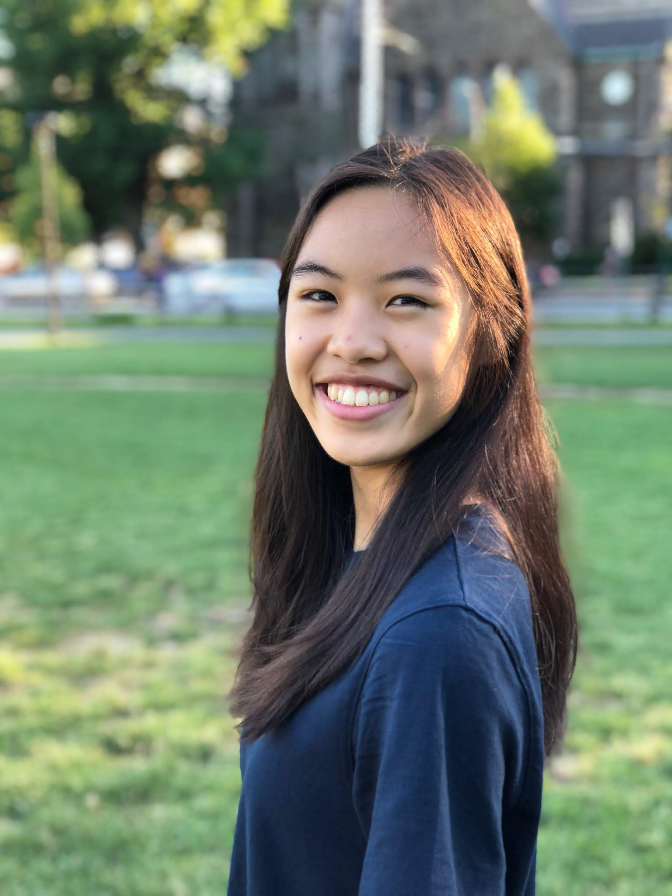

Lowell / Boston, Massachusetts
Lowell / Boston, Massachusetts
I founded Science & Us, a youth-led organization that aims to make science more engaging and relevant. We teach high schoolers how to communicate complex topics to diverse audiences and about interdisciplinary STEM careers (e.g. science writing and policy) that are rarely mentioned in school.
 Participants collaborating and having fun at MAHacks I, held in December 2016 at the MIT Stata Center. We're now planning MAHacks IV!
Participants collaborating and having fun at MAHacks I, held in December 2016 at the MIT Stata Center. We're now planning MAHacks IV!
I serve as co-director for MAHacks, an entrepreneurship-focused high school hackathon, or collaborative programming and design event, in Boston. We encourage participants to solve problems and offer prizes (e.g. opportunities for mentorship, accelerators, and learning programs) that help them continue their projects beyond our event—an exception in the hackathon world.
Currently, I'm conducting research at UMass Lowell on how DNA methylation, which can activate and suppress genes, contributes to the survival and evolution of duplicate genes, a major source of genetic novelty and diversity.
Last summer at Harvard University, I helped refine a protocol for developing nanoscale laser cavities made of semiconductor materials containing quantum dots and quantum wells.
 Me pipetting a solution at the Biogen Adventures in Biotechnology 2017 program.
Me pipetting a solution at the Biogen Adventures in Biotechnology 2017 program.
I'm also a co-captain for FIRST Robotics Competition Team 5962, composed of members from Lowell, Dracut, and surrounding towns. I'm a founder of TEDxLowellHigh, an event featuring talks on ideas worth spreading and celebrating diverse voices in Lowell, MA.
Above all else, I value integrity, respect, and a love for learning and being open-minded. Some of my other interests include web development, data science, handlettering, reading, and writing. When I'm not having fun working on projects, I'm probably scrolling through memes or exercising—maybe both.
Feel free to reach out to me at hello@katherinehuang.co!